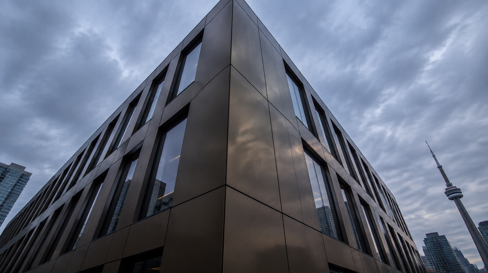
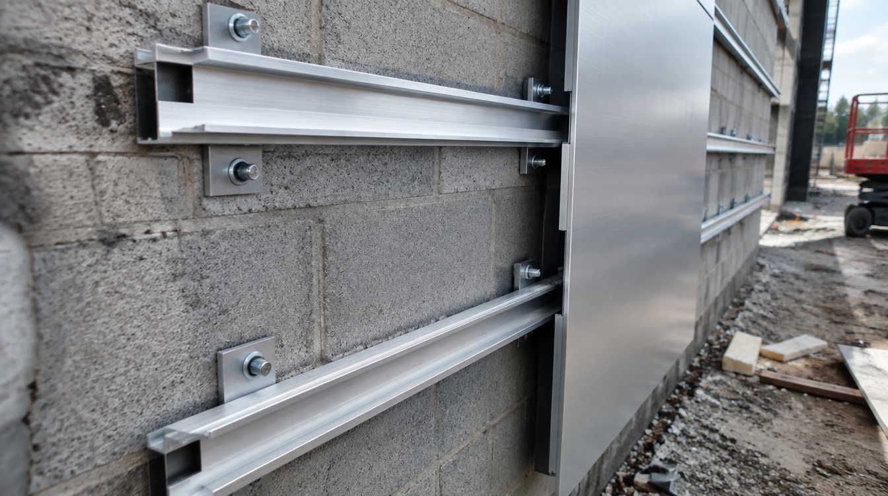

Services
From retail storefronts to multi-storey commercial buildings, Pure Fabrication supplies and installs ACP facade systems across the Greater Toronto Area — on time, on budget, and built to last.
What We Do
Commercial facade systems are more than an aesthetic choice — they define how a building performs against rain, wind, temperature swings, and decades of Toronto weather. Getting them right means precise fabrication, engineered attachment, and trades who understand the details.
Pure Fabrication handles the full scope: design coordination, shop drawings, custom panel fabrication, and field installation. We work directly with general contractors, developers, and architects across the GTA to deliver exterior cladding systems that look sharp and perform to spec.
Our primary material is aluminum composite panel — ACP. It's the industry standard for commercial facades in Ontario because it offers consistent colour, tight tolerances, low maintenance, and a weight that doesn't demand heavy structural support. We also work with solid aluminum, ACM flat sheets, and custom perforated panels on select projects.
Service area
Toronto, Mississauga, Brampton, Vaughan, Markham, Pickering, Burlington, and surrounding GTA municipalities.
Project types
Retail strip plazas, commercial buildings, mixed-use low-rise, drive-throughs, medical and dental offices, industrial facades, and custom residential exteriors.
Lead time
Standard panel orders fabricate in 3–5 weeks. Custom colours and profiles may require an additional 1–2 weeks depending on material availability.
Code compliance
All systems are designed to Ontario Building Code requirements. FR and A2 core options available for mid-rise and high-rise applications.

System Types
Rainscreen ACP Cladding
The most common commercial facade system. ACP panels are mounted on an aluminum subframe with a deliberate air gap between the panel and the building's substrate. The cavity allows moisture to drain and dry, protecting the structure behind it. Rainscreen is specified on most commercial builds over 3 storeys in Ontario.
Direct-Fix Panel Systems
ACP panels mounted directly to a prepared substrate — concrete, masonry, or light steel framing — using mechanical fasteners or structural adhesive. Common on single-storey retail facades, plinths, and feature walls where speed of installation is a priority and a rainscreen cavity is not required by code.
Cassette Panel Systems
Panels are fabricated with returns on all four edges, forming a tray or cassette that clips onto horizontal rails. The concealed fastener system creates a clean, jointless face with no visible fixings. Used on premium retail, hospitality, and corporate facades where the finished appearance must be flawless from street level.
Reveal Joint Systems
Panels are separated by deliberate open or recessed joints — typically 6mm to 20mm — creating a shadow line between each panel. The reveal can be horizontal, vertical, or a grid pattern. This is the signature look of most modern commercial buildings in the GTA: clean, architectural, and unmistakably contemporary.
Soffit & Canopy Cladding
ACP is used extensively for building soffits, entrance canopies, and parking structure soffits. The material holds paint well, doesn't corrode, and requires minimal maintenance even in exposed applications. We fabricate curved soffit panels and custom-radius canopy sections in-house.
Signage & Feature Elements
ACP is routed and formed into 3D letters, logo surrounds, column cladding, and architectural feature elements. Many of our commercial facade projects include a signage component fabricated from the same panel material as the cladding — creating a unified look across the entire building face.

Why ACP
Cost-effective at scale
ACP costs significantly less per square metre than solid aluminum, stone, or glass curtainwall systems — while achieving a similar visual result. For developers managing tight margins on commercial projects, ACP typically delivers the best facade dollar for dollar.
Consistent colour across large areas
Unlike paint or render, ACP panels are factory-finished with PVDF coatings that maintain consistent colour across thousands of square metres. There's no variation between batches, no touch-ups, and no fading — even on south-facing facades in full sun.
Fast installation
Lightweight panels and prefabricated subframe components mean commercial ACP facades go up quickly. On a straightforward retail plaza, a crew can install 500–800 sq ft per day. Fast enclosure means earlier interior trades, earlier occupancy, and less carrying cost.
Low lifetime maintenance
A PVDF-coated ACP facade requires nothing beyond occasional washing to maintain its appearance. There's no repainting cycle, no sealer application, and no surface degradation. Most commercial ACP installations in the GTA look the same at year 15 as they did at install.
Design flexibility
ACP is available in hundreds of standard colours and can be custom-matched to any RAL or Pantone specification. Finishes range from matte to gloss, brushed aluminum to wood-grain, solid colour to metallic. Panels can be cut to virtually any shape and formed into curves, returns, and 3D elements.
Proven in Ontario winters
ACP is dimensionally stable across the full range of Ontario temperatures — from -30°C January lows to +35°C summer heat. Properly installed rainscreen systems manage freeze-thaw moisture cycles without delamination, cracking, or joint failure.
Clients
Pure Fabrication works with general contractors, developers, property managers, and architects on commercial facade projects across the GTA. Most projects come to us at the tender stage or shortly after award.
General Contractors
We act as the facade sub on commercial builds. We provide shop drawings, material submittals, and full installation. GCs get a single point of accountability for the exterior skin.
Developers & Owners
Developers who want to control facade quality directly engage us early in the design process. We can provide pricing at concept stage, refine as drawings develop, and lock in the facade scope before tender.
Architects & Designers
We work with design teams during schematic and DD phases to confirm what's buildable, what materials are available, and what details will perform in Ontario conditions — before anything gets priced.
How it works
Site review and scope confirmation
We start with a site visit or drawing review to confirm quantities, existing conditions, and the right system for your project. We'll flag anything that affects installation — substrate condition, sequence with other trades, access requirements — before any paperwork is signed.
Shop drawings and material selection
We produce stamped shop drawings showing panel layout, joint widths, subframe spacing, and connection details. Colour samples and finish options are presented for approval. Most GCs and developers appreciate that we handle this in-house — it removes a significant coordination burden from the project team.
Panel fabrication
Panels are cut, routed, and formed in our Toronto-area fabrication shop. Each panel is labelled to the shop drawing layout for a straightforward installation sequence. We quality-check every panel for dimensional accuracy and finish consistency before it leaves the shop.
Subframe and panel installation
Our crew installs the aluminum subframe first — surveyed, plumb, and aligned. Panels follow in sequence. We coordinate with the general contractor on access, lifts, and schedule to keep installation moving without holding up other trades on site.
Sealant, trim, and punch list
All perimeter sealant, flashing, and trim work is completed by our team. We walk the facade with the GC or owner before signing off — any panels that don't meet our finish standard get replaced, not touched up.
Ready to talk about
your facade project?
Let's get into it.